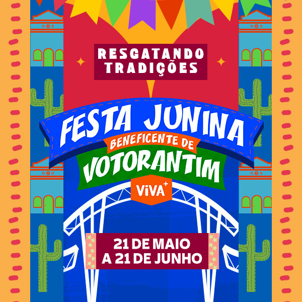

Próximos Eventos
SAMBA PREMIUM SOROCABA - Menos é Mais + Sorriso Maroto
Data: 02 de abril de 2026, 17:00 - 03 de abril de 2026, 04:00
Local: ARENA LUCKY FRIENDS - Rua Antônio Aparecido Ferraz, 945 - Parque Santa Isabel, Sorocaba, São Paulo - 18052280

Festival de Cinema Independente
Data: 05 de Dezembro de 2026, 19:00
Local: Teatro Municipal Francisco Beranger - Av. Ver. Newton Vieira Soares, 291 - Centro, Votorantim - SP, 18110-013

Festa Junina de Votorantim 2026
Data: 21 de Maio a 21 de Junho de 2026
Local: Praça de Eventos Lecy de Campos (Av. 31 de Março, 327, Votorantim - SP).
Atrações: Shows confirmados incluem nomes como Ana Castela, Zé Neto & Cristiano, Murilo Huff, Gustavo Mioto, entre outros.